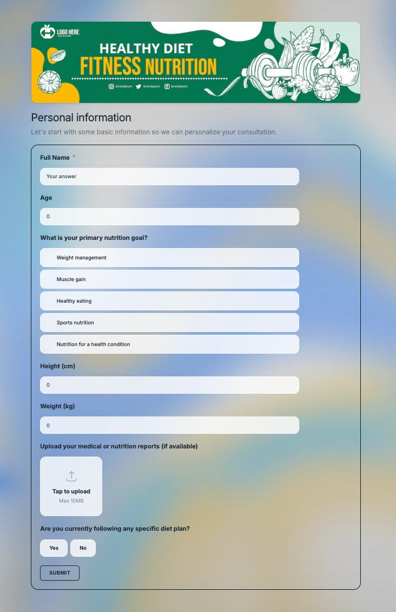
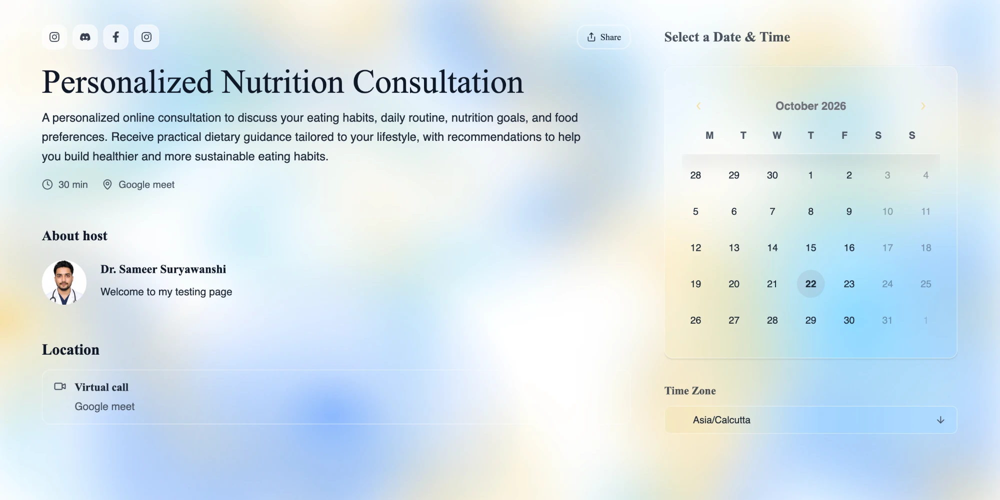

Booking took one click. Everything around it took a chat thread.
Scroll to flip ↻Customers could book a slot easily, but collecting reports before a session and handling changes afterwards still happened on WhatsApp and calls. I owned the improvements that brought both into the product.
Booking at a glance
- Research10+ doctors and clinics
- ProblemsBefore and after a booking
- RoadmapPrioritised fixes
- PRDsWith design and engineering
- Live3 improvements
Why did booking need work?
Customers could book a slot easily, but everything before and after the appointment still happened over WhatsApp and calls.
Scroll to flip ↻SocialAddress Booking gives a business its own booking page. The business shares the link, for example in its Instagram bio, and customers open it, pick a free time and book an appointment, a one-on-one session or a seat in a workshop. It’s used by clinics and doctors, coaches, consultants and workshop hosts: businesses that are paid for their time.
Booking a slot already worked well. But the work around each booking still happened by hand: collecting reports before a visit, answering questions about timings, and rescheduling when plans changed.
Before: booking worked, everything around it was manual
- 1BookingCustomers book through the booking linkWorked
- 2Collecting informationDetails and history gathered over calls and WhatsAppBy hand
- 3Storing informationScattered across chats and filesBy hand
- 4Sharing documentsPDFs and files sent one by one in messagesBy hand
- 5Finding it laterSearching through old chats and filesBy hand
Worked The booking itself By hand The work around it, before the improvements
Problem statementClinics, coaches and workshop hosts were handling everything before and after a booking by hand, over WhatsApp and calls.
What did doctors and hosts tell me?
I interviewed 10+ doctors and clinics about how they handle appointments today.
Scroll to flip ↻My main research was 10+ interviews with doctors and clinics. In my separate merchant interviews for Shop, workshop and course sellers described the same problem: they also collected details, payments and documents by hand over WhatsApp. That showed me the problem wasn’t limited to clinics.
How one appointment happens today
| Step | What happens | Pain point |
|---|---|---|
| 1 | A patient books by DM, call or WhatsApp | Bookings scattered across channels |
| 2 | The clinic asks for history and reports on WhatsApp | Information arrives late and in pieces |
| 3 | Online consults need a meeting link, shared by hand | Extra steps for every session |
| 4 | Patients call again and again about timings | Front-desk time lost to the same question |
| 5 | The patient is late, delayed or doesn’t show | No easy way to reschedule or tell the other side |
Three insights
History and reports are collected separately, usually on WhatsApp, before the session.
No-shows, late arrivals, delays and repeated calls about timings take up the day.
One clinic said patients drop off when they have to move between Instagram, WhatsApp and Google Meet.
Who we built for. Dr. Meera Kulkarni (fictional persona built from several real interviews) runs a homeopathy clinic. She moved from a walk-in token system to appointments, and now loses time to no-shows, late arrivals and calls about timings.
Counter-signal: not everyone needed this. Some clinics serve mostly local patients who prefer to phone the clinic, so online booking isn’t a priority for them. And one workshop host tried taking bookings through a form alone, but people didn’t sign up: they wanted to talk to her before paying. So we didn’t try to replace the conversation. We focused on removing the manual work around it.
Resulting goalReduce the admin around a booking, not replace the conversation.
What did we decide to improve, and why?
Move the work before and after a booking into the product, while keeping the owner in control.
Scroll to flip ↻Product visionBring what happens before and after a booking into the product, while keeping the owner in control.
Core owner journey
Meera’s path The highlighted options are what a clinic like hers picks.
| Decision | Status | Why |
|---|---|---|
| Booking forms with document upload | Live | Information arrived late, on WhatsApp. Now each business asks what it needs, and customers upload reports while booking. |
| Booking → calendar, with rescheduling | Live | Plans change. A confirmed booking appears in the calendar, and the owner reschedules from there. |
| Notifications to both sides | Live | Every change used to need a call. Now both sides are told automatically. |
| Branded booking pages | Live | Trust came up again and again. The page matches the business’s colours. |
| SAM AI scheduling, with owner confirmation | In testing | Owners avoided letting AI act for them, so SAM proposes the change and the owner confirms it. |
| Replacing the conversation with forms only | Out of scope | Some customers want to talk before paying. Booking reduces the admin; it doesn’t remove the person. |
| Online booking for clinics whose patients prefer to call | Out of scope | These clinics told us they don’t need it, so we didn’t push it on them. |
How did I take it forward?
From 10+ interviews to a roadmap, PRDs and delivery.
Scroll to flip ↻I interviewed 10+ doctors and clinics, pulled out the recurring problems, built the roadmap, prioritised the improvements and wrote the PRDs. I owned Booking improvements independently and worked with design and engineering through delivery. This was separate from Shop, my main project.
What the customer experiences
The AI proposes, the owner confirms. SAM, the platform’s AI assistant, can change the calendar from a plain-language request. But across my research, small-business owners avoided letting AI act for them. So SAM only proposes the change, and the owner reviews and confirms it. That keeps AI useful without taking control away from the owner.
The screens customers see


Screens from a test booking page.
What happened, and what did I learn?
Three improvements live, one AI feature in testing.
Scroll to flip ↻Booking forms with document upload, the connected calendar with rescheduling and notifications, and branded booking pages are live. SAM AI scheduling is in testing.
A good booking tool reduces the admin around a conversation. It doesn’t try to replace it.
Measure the no-show rate, the reschedule rate and how many bookings arrive with complete information. I’d also interview coaches and consultants directly.
I don’t have verified usage numbers, so this page shows none.
Up nextHow I helped users find what we built